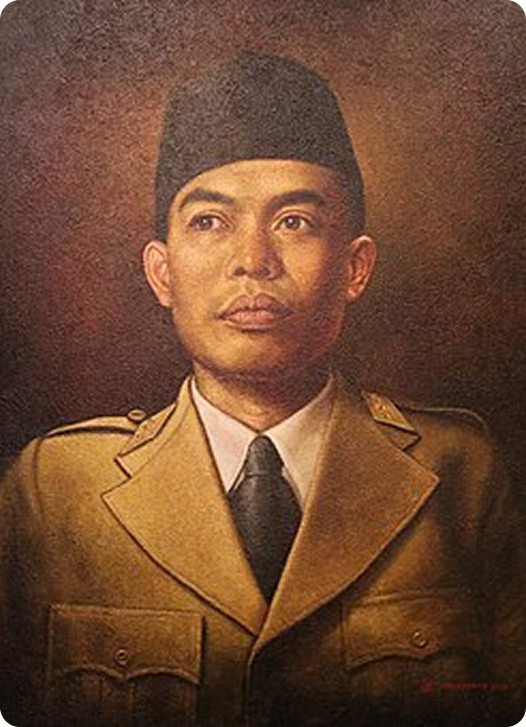

Jendral Sudirman
Jenderal Besar Soedirman adalah salah satu tokoh paling heroik dan dihormati dalam sejarah Indonesia. Ia lahir di Dukuh Rembang, Purbalingga, pada 24 Januari 1916. Sejak muda, Soedirman dikenal sebagai pribadi yang cerdas, tekun, dan memiliki jiwa kepemimpinan yang kuat. Ia aktif dalam organisasi kepanduan Hizbul Wathan dan menjadi guru di sekolah Muhammadiyah. Perjalanan Militer dan Perang Kemerdekaan Karir militernya dimulai pada masa pendudukan Jepang, di mana ia bergabung dengan pasukan Pembela Tanah Air (PETA). Di sini, Soedirman menunjukkan bakat strategis dan kemampuan taktis yang luar biasa. Setelah Indonesia merdeka, ia terpilih sebagai Panglima Besar Tentara Keamanan Rakyat (TKR), cikal bakal TNI, pada 12 November 1945. Meskipun usianya masih sangat muda, 29 tahun, ia berhasil menyatukan berbagai laskar perjuangan menjadi satu kekuatan militer yang solid. Puncak perjuangannya terjadi selama Agresi Militer Belanda II pada 19 Desember 1948. Saat Yogyakarta, ibu kota Republik Indonesia saat itu, diduduki Belanda, Soedirman yang sedang sakit parah (menderita TBC) menolak untuk menyerah. Ia memutuskan untuk memimpin perang gerilya dari dalam hutan. Dengan ditandu, ia memimpin pasukannya bergerilya selama tujuh bulan melintasi gunung, lembah, dan hutan di Jawa. Aksi heroik ini menjadi simbol perlawanan tak kenal lelah terhadap penjajah, menunjukkan kepada dunia bahwa Republik Indonesia masih ada dan terus berjuang. Akhir Hayat dan Penghargaan Setelah perjuangan gerilya usai, Soedirman kembali ke Yogyakarta. Kondisi kesehatannya terus menurun akibat TBC yang parah. Ia meninggal pada 29 Januari 1950 di Magelang. Atas jasa-jasanya yang tak terhitung, ia dianugerahi gelar Pahlawan Nasional dan pangkat Jenderal Besar Anumerta, sebuah pangkat kehormatan tertinggi di TNI yang hanya disematkan kepada tiga tokoh Indonesia. Soedirman dikenang sebagai sosok yang tidak hanya ahli dalam strategi militer, tetapi juga sebagai pemimpin yang sederhana, teguh pendirian, dan sangat mencintai rakyatnya.
← Kembali